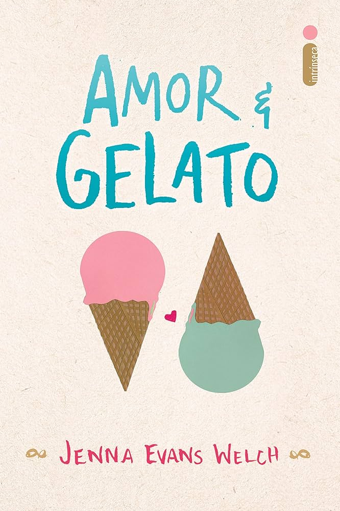
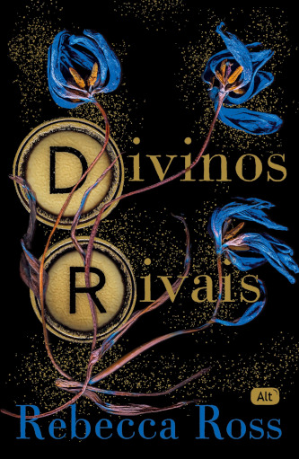
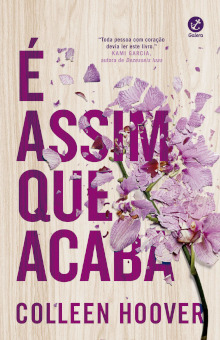

Livros e Resenhas
Esta página contém informações sobre os livros disponíveis e suas respectivas resenhas. A leitura é uma das ferramentas mais poderosas para o desenvolvimento humano, atuando como uma ponte entre o conhecimento, a imaginação e a transformação social.
Amor & Gelato

Amor & Gelato (de Jenna Evans Welch, publicado no Brasil pela Intrínseca) é um romance juvenil leve que mistura luto, autodescoberta e um verão inesquecível na Itália.Lina, de 16/17 anos, acaba de perder a mãe para o câncer. Antes de falecer, a mãe faz um último pedido: que Lina vá para Florença, na Itália, morar com Howard, um amigo antigo da sua juventude. Ao chegar na Toscana, Lina se espanta ao descobrir que a casa de Howard fica dentro de um antigo cemitério de soldados americanos da Segunda Guerra Mundial, onde ele trabalha como administrador. Logo no início, Lina recebe um diário que a mãe escreveu quando morou na Itália na juventude. Ao ler os relatos maternos, ela passa a desvendar segredos do passado, um antigo romance e mistérios sobre sua própria identidade. O livro acompanha a jornada de Lina enquanto ela explora a história de sua mãe e descobre mais sobre si mesma, além do romance que se desenvolve com um garoto que ela conhece durante sua viajem.
A seleção

A coleção A Seleção, escrita por Kiera Cass, é um fenômeno da literatura young adult que mistura romance, contos de fadas e elementos de distopia em um mundo dividido por castas sociais.A história se passa no país de Illéa, onde a sociedade é dividida em oito castas numeradas (da Um, a realeza, até a Oito, os mais pobres e marginalizados). A grande oportunidade de ascensão social — ou o pesadelo de muitas jovens — é a Seleção: uma competição ao estilo "reality show" onde 35 garotas entre 16 e 20 anos são levadas ao palácio real para disputar o coração e a coroa do príncipe Maxon. Durante os livros acompanhamos a história de America Singer que é forçada pela mãe a se inscrever para a seleção e acaba por viver grandes aventuras incluindo Conclui a trilogia original de America e Maxon. O desfecho traz grandes reviravoltas políticas, um triângulo amoroso, confrontos com os rebeldes, ameaças do rei e a decisão definitiva sobre quem usará a coroa. A partir do quarto livro, os livros passam a ser narrados por Eadlyn, filha de américa Eadlyn é a primeira princesa a comandar a sua própria Seleção de pretendentes. Os livros mostram o amadurecimento dela diante dos deveres da coroa e das surpresas do amor.
Melhor do que nos filmes

Melhor do que nos filmes, de Lynn Painter, é um romance jovem adulto que explora temas como
amizade,
amor, autodescoberta e a importância de viver o presente.
A história acompanha a vida de uma
adolescente que se vê em meio a desafios pessoais e relacionamentos complicados, enquanto
tenta
encontrar seu lugar no mundo. Ao decorrer da história, Liz Buxbaum recebe a ajuda do menino que
mora na casa em frente à sua, Wes Bennett, para conquistar um
velho amigo de infância que voltou para sua cidade, o que ela não esperava era que durante a
história ela se depara com
sentimentos confusos em relação ao vizinho. Será que a Liz realmente encontrou seu verdadeiro
amor? O livro aborda questões de identidade,
autoestima e a busca por
felicidade, mostrando que a vida real pode ser tão emocionante quanto, ou até mesmo mais,
do que os filmes que
assistimos.
Patinando no amor

Patinando no Amor, escrito por Lynn Painter e publicado no Brasil pela Editora Intrínseca, é uma
comédia romântica jovem que aposta nos clichês de friends to lovers, segunda chance e fake
dating. Dani, que retorna para Minnesota no último ano do ensino médio após o doloroso divórcio
dos pais. Lá, ela reencontra Alec, seu antigo melhor amigo de infância de quem se distanciou
após uma mudança e o silêncio de cartas que pararam de chegar. Alec, que era um garoto sensível
e engraçado do
passado virou uma grande estrela local do hóquei, cercado de
popularidade e de uma nova realidade que assusta Dani. Porém uma situação inesperada força os
dois a
fingirem um relacionamento público, ajudando Alec a melhorar sua imagem o que faz a antiga
conexão e sentimentos reprimidos virem à tona.
Além do romance, o livro aborda a pressão
familiar, o peso de expectativas excessivas sobre os jovens, o medo de não ser suficiente e
segredos familiares mal resolvidos.
Eu e esse meu Coração

O livro Eu e Esse Meu Coração, escrito por C. C. Hunter e publicado no Brasil pela Editora Jangada, mistura romance jovem, drama e mistério. A autora conta a história de Leah MacKenzie que, por causa de um vírus e uma inflamação no miocardio vive com um coração artificial e espera a oportunidade de um transplante que possa salvar sua vida. Quando um coração aparece ela é submetida a uma cirurgia de transplante e, após a recuperação, descobre que o coração que recebeu pertenceu a um garoto chamado Eric, um antigo colega de escola. A partir desse momento, Leah começa a sentir mudanças em seu comportamento e personalidade, como se estivesse herdando traços do doador e passa a ter sonhos vívidos e memórias que não são suas. Assim Leah se junta com Matt, irmão gêmeo de Eric, para investigar mais sobre sua vida antes da morte para descobrir a verdade sobre a morte do doador. O livro explora temas como identidade, destino, amor e a conexão entre as pessoas, mesmo após a morte.
Divinos Rivais

Divinos Rivais, escrito por Rebecca Ross e publicado no Brasil pela Editora Alt, é um romance jovem adulto que mistura elementos de fantasia, romance e aventura. A história acompanha a vida de Iris E. Winnow, uma adolescente que, durante uma guerra entre deuses, para conseguir um emprego como jornalista decide ir para a linha de frente com os soldados de Enva. Assim, envolvida em uma batalha entre deuses e criaturas mitológicas, a protagonista enfrenta desafios pessoais, como a perda de sua mãe e a busca por seu irmão Forest, enquanto desenvolve relacionamentos com amigos e com seu principal rival de trabalho Roman C. Kitt, além de descobrir a verdade sobre os deuses que travaram essa guerra. O livro aborda temas como coragem, amizade, amor e a luta entre o bem e o mal, oferecendo aos leitores uma experiência envolvente e emocionante.
A Hipótese do Amor

é um romance contemporâneo ambientado no meio acadêmico que se tornou um fenômeno mundial e
virou adaptação cinematográfica no Prime Video. No livro Olive Smith, doutoranda em Biologia
na
Universidade de Stanford, quer ajudar sua melhor amiga Anh a ficar com seu ex-namorado
Jeremy, com quem ela nunca teve uma conexão real. Para convencer a amiga de que já seguiu
em frente, Olive precisa provar que está em um relacionamento. Em um momento de pânico, ela
beija o primeiro homem que vê no corredor para fingir que tem um par. O homem é o Dr. Adam
Carlsen, um jovem professor brilhante, porém conhecido por ser ranzinza, exigente e o
"terror" dos alunos de laboratório. : Para a surpresa de Olive, Adam aceita participar da
farsa. Ele precisa de uma namorada fixa para mostrar à universidade que tem raízes e
estabilidade em Stanford, garantindo assim o desbloqueio de fundos essenciais para sua
pesquisa. Conforme os encontros públicos, a barreira fria de Adam se desfaz com Olive e a
atração entre eles
desafia todas as suas lógicas científicas.
O livro aborda temas como o meio acadêmico,
machismo e desigualdade de gênero na ciência, a síndrome do impostor e dinâmicas de
confiança.
E assim que acaba

É Assim que Acaba, escrito por Colleen Hoover, é um romance dramático que aborda a complexidade das relações abusivas, o ciclo da violência doméstica e a força necessária para rompê-lo. O livro conta a história de Lily cresceu em um lar marcado pela violência doméstica que o pai exercia contra a sua mãe. Já adulta e morando em Boston, ela conhece Ryle Kincaid, um neurocirurgião carismático e intenso, com quem inicia um relacionamento. Conforme o romance avança, Ryle passa a apresentar comportamentos possessivos e episódios de agressão, fazendo Lily reviver os traumas da infância e encarar a dolorosa realidade de estar em uma relação abusiva.
A razão do amor

A razão do amor, escrito por Ali Hazelwood e publicado no Brasil pela Editora Arqueiro, é uma comédia romântica no estilo enemies-to-lovers ambientada no universo STEM (ciência, tecnologia, engenharia e matemática). O livro narra a história de, Dr. Bee Königswasser, uma neurocientista excêntrica que conquista a vaga dos sonhos para liderar um projeto de neuroengenharia em parceria com a NASA. O problema é que seu co-líder é Levi Ward, um engenheiro alto e atraente que ela jurava ser seu arqui-inimigo desde os tempos de pós-graduação. Ao longo da convivência forçada em um ambiente de trabalho hostil e machista, Bee descobre que a suposta inimizade era fruto de mal-entendidos e que Levi, na verdade, sempre foi atencioso, protetor e perdidamente apaixonado por ela.
Todas as suas imperfeições

Todas as Suas Imperfeições, escrito por Colleen Hoover, é um romance contemporâneo que explora temas como amor, perda, superação e a complexidade das relações humanas.A história é construída em dois tempos narrativos que se alternam: "Antes" (o início arrebatador, romântico e imperfeito do casal) e "Agora" (o presente de ruína e silêncio no casamento). A história narrada é a de Quinn e de Graham se conhecem no pior dia de suas vidas. Ela chega mais cedo de viagem para surpreender o noivo e descobre uma traição; ele, no mesmo prédio, flagra a namorada o traindo. No corredor, trocando biscoitos da sorte e desabafos, surge uma conexão imediata e profunda. Meses depois, eles se reencontram, engatam um romance avassalador e se casam. Eles parecem almas gêmeas e acreditam que o amor deles é capaz de superar qualquer obstáculo. Anos mais tarde, o casamento entra em colapso devido à infertilidade de Quinn. A frustração de não conseguir engravidar, combinada com impedimentos para a adoção, causados por um erro do passado de Graham, gera um abismo de silêncio, mágoas e ressentimentos.